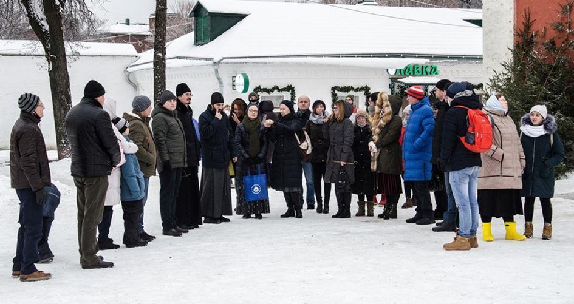
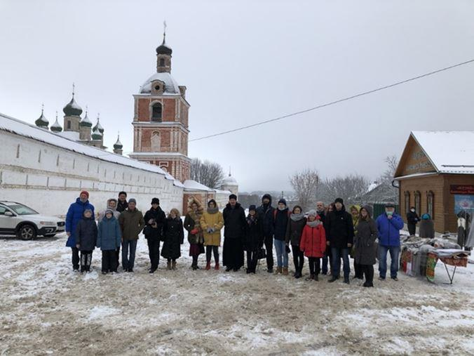
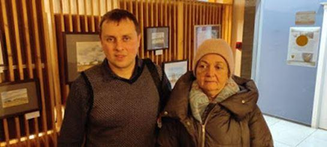
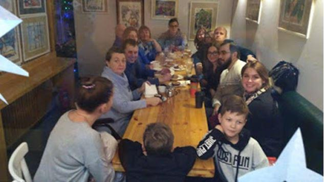

Une des jeunes femmes rencontrées au Noël français m'a conviée à venir chanter dimanche soir, elle essaie de rassembler les gens, les gosses pratiquent des jeux sur la place, devant la cathédrale, et puis dans l'église, nous sommes supposés chanter des vers spirituels. Je l'ai fait, mais ma vielle était très contrariée par le froid et l'humidité. Les dames présentes chantent toutes très mal. Elles n'en ont pas l'habitude, elles ne connaissent pas les chansons. L'une d'elle à décrété que cela ne l'intéressait pas car elle cherchait un endroit où chanter vraiment. C'est pourquoi créer un endroit où partager et apprendre tout cela avec des "intervenants", comme on dit dans l'éducation nationale, serait vraiment une bonne chose.
Il est 5 heures du soir mais il fait encore nuit à
4 heures, bien que désormais, les jours rallongent...
Le lendemain, je devais rencontrer au café toute une délégation d'Alexandrov, la ville d' Ivan le Terrible, au café français.
Le centre culturel et l'éparchie avaient organisé une expédition à Pereslavl et je faisais partie des curiosités locales. On m'a posé toutes sortes de questions sur la France, ma décision de venir ici. C'étaient des gens simples, chaleureux, sincères et pleins de bonne volonté.
Ils me disaient les seuls mots de français qu'ils connaissaient, une dame m'a lu un poème de Pouchkine traduit en français. J'étais en face d'un jeune homme orthodoxe intelligent, curieux et bienveillant. Quand nous nous sommes séparés, j'ai vu qu'il boitait et qu'il avait une canne, et lui ai demandé s'il s'était cassé la jambe, il m'a répondu qu'il avait une prothèse.
Je me suis sentie comme ma mère lorsqu'elle avait demandé à un soldat américain manchot pourquoi il portait son alliance à la main gauche. Ce jeune homme était beau garçon, grand, comme on dit, il faut tourner sept fois sa langue dans sa bouche avant de parler.
D'un autre côté, lui-même m'avait posé la question suivante : "Comment faites-vous, à votre âge, pour garder un esprit aussi clair ?
- Eh bien, pourquoi, vous pensez que je devrais être gâteuse ?"
A gaffeur gaffeuse et demie !
Je leur ai raconté nos projets de folklore, et ils nous ont invités à une manifestation festive le 12 juin, les balalaikers et moi. Il faut démontrer aux gens que le folklore est à leur portée et peut leur offrir de grandes satisfactions.
C'est essentiellement pour en témoigner que je m'acharne à jouer, car maintenant, j'ai un peu trop de cordes à mon arc, et je fais flèche de tout bois...
L'autre soir, j'ai encore eu une grande conversation sur Skype, avec Anne, c'est drôle comme on est raccord avec certaines personnes, et dans ces cas-là, il devient difficile de s'arrêter de parler, on se rend même mieux compte à quel point la plupart du temps, on se tait. Et encore, en tant qu'écrivain, je m'exprime dans mes livres...
Elle m'évoquait les scandales et les intrigues qui agitent les paroisses orthodoxes françaises, les descendants d'émigrés qui n'ont pas compris que la Russie comptait des millions de Russes et que la perestroïka avait eu lieu en 1985, elle pense, bien qu'elle se soit convertie il y a longtemps, que l'orthodoxie n'est pas pour les Français, en fin de compte, qu'il y a incompatibilité d'humeur et de nature, bien qu'elle ne croit pas du tout au catholicisme, et du coup, elle ne voit pas trop ce qui pourrait récupérer la France, et dans quoi s'inscrire elle-même. C'est effectivement une question cruciale. Le père Barsanuphe, qui avait converti hardiment beaucoup de Français, m'avait confié un jour : « Vous savez, honnêtement, je ne crois pas trop à l'orthodoxie française, car d'après mon expérience, soit les Français deviennent orthodoxes et sont de moins en moins français, soit ils restent français, mais ne deviennent pas orthodoxes. » Malheureusement, ce n'est peut-être pas faux, encore que j'ai trouvé, à Solan, que le greffon prenait bien, et jusqu'à ce que le père Placide me donnât son fameux conseil, je pensais même avoir mon petit rôle à jouer là-dedans.
Je connais de vrais Français qui sont de vrais orthodoxes, ils sont assez isolés. Par certains côtés, je me sens très française, ma langue est française, pour commencer, et la langue forme une partie de notre mentalité, mais si j'ai été à ce point, très jeune, aspirée par la Russie, ce n'est certainement pas un hasard, surtout en passant par la Grèce... J'ai l'impression qu'il faut faire un sacré retour en arrière, dépouiller cinq siècles de dérive, au moins, pour retrouver un esprit commun aux Français et aux Russes, ou Grecs, ou Serbes... Ou bien avoir une sorte d'héritage génétique médiéval, peut-être. De son côté, Skountsev estime que les "nikoniens" ont trop dérivés par rapport à la vieille foi, et qu'on ne peut plus s'entendre, alors que je ne vois pas de différence énorme entre les deux. Ce qu'il y a de sûr, c'est que les "tradis" sont encore ceux que les orthodoxes perçoivent le mieux, à commencer par mon père Valentin.
Partager cette page